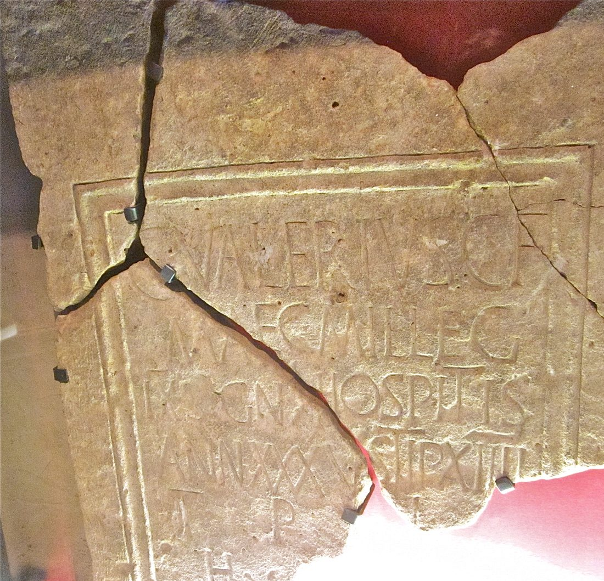

Unit 4 · Boudicca · Lesson 7
The campaign begins: Camulodunum, the Ninth Legion, Londinium and Verulamium
While the governor and his army were far away in north Wales, how did the rebels destroy three Roman towns? And how do we turn the evidence into a paragraph?
Year 11 Ancient History · Present with → or space · Read on a phone with R

Review · books closed · 6 minutes · press K for the timer
Six questions from Lessons 1–6
- What was a client king? Name the Iceni’s. A local ruler allowed to keep his kingdom as Rome’s ally, in return for loyalty. The Iceni’s was Prasutagus.
- What did Prasutagus’s will say, and what did he hope it would do? He ‘had made the emperor his heir along with his two daughters’, hoping this ‘token of submission would put his kingdom and his house out of the reach of wrong’. ‘But the reverse was the result’ (Annals 14.31).
- Name the two money matters that Dio gives as causes of the revolt. Sums Claudius had given to leading Britons, which the procurator Decianus Catus said ‘were to be paid back’; and Seneca’s loan (40,000,000 sesterces in Cary’s translation), called in ‘all at once’ (Dio 62.2).
- Who were the Trinovantes, and why did they join the revolt? The people of Essex. The veterans of the colony at Camulodunum ‘drove people out of their houses, ejected them from their farms’ (Annals 14.31); most historians think the land taken was theirs.
- Where was the governor, Suetonius Paulinus, when the revolt began? Attacking the island of Mona (Anglesey), off north-west Wales (Annals 14.29–31). Tacitus: ‘he left his rear open to attack’ (Agricola 14).
- Writing · fix the tense: “Tacitus reported that centurions plunder Prasutagus’s kingdom.” “Tacitus reports that centurions plundered Prasutagus’s kingdom.” Present tense for what a writer does (his book still says it); past tense for what happened.
Mark your own answers in a different colour. Which question did you find hardest?
Learning intentions and success criteria · 2 minutes
Today’s goals
- understand how the revolt spread from Camulodunum to Verulamium
- write a body paragraph that integrates evidence
- sequence the campaign and explain why the colony fell
- identify the five moves in a model body paragraph
- embed a short quotation with a signal phrase, a reference and analysis
Syllabus outcomes: AH-11-02 proposes ideas about the varying causes and effects of events and developments · AH-11-03 explains the role and significance of forces, features, events, individuals and groups in shaping the past · AH-11-05 analyses different types of sources for evidence to support a historical account or argument · AH-11-07 communicates historical understanding, applying historical knowledge, terms and concepts. Life Skills: AH-LS-06 investigates people, events or developments of the ancient world · AH-LS-11 communicates information about the past using historical terms and concepts.
Note-making · the routine for the whole course
How to structure your notes
questions and key terms, written after
short phrases, arrows (→ leads to), abbreviations (c. = about; Ann. = Annals)
- 1A new pageA cue column about a quarter of the page wide; title and date at the top; room for a summary at the bottom.
- 2Listen and look, then writeDon’t copy while a slide is being explained. Phrases, not sentences; a source for every claim.
- 3Write your own notes at the ✎ checkpointThen compare with the model notes, one row at a time. Add what you missed in a second colour.
- 4Write the cue questions afterwardsUse exam verbs: outline, explain, assess. To revise, cover your notes and answer the cues.
- 5Finish with a three-sentence summaryOne checkpoint today: the campaign, from Mona to Verulamium. The second half of the lesson is writing.
Key vocabulary · add to the unit word wall
Words for today
| Writing terms | Meaning |
|---|---|
| Signal phrase | Words that introduce evidence and name its source: ‘As Tacitus reports,’ |
| Judgement (topic) sentence | The first sentence of a body paragraph; it answers the question. |
| Added today | Meaning |
| Embedded quotation | A few of a source’s exact words woven into your own sentence, with a reference. |
| The five moves | Judge → Evidence → Analyse → Evaluate → Resolve: the order of a Stage 6 body paragraph. |
| Content terms | Meaning |
|---|---|
| Governor / procurator | The emperor’s army commander and chief judge in a province (Suetonius Paulinus) / the official who ran its finances and taxes (Decianus Catus). |
| Legion / auxiliaries | A unit of about 5,000 Roman citizen soldiers / soldiers recruited from non-citizens. |
| Veteran / colonia | A retired soldier / a town of Roman citizens, often veterans; Camulodunum was the first in Britain. |
| Druids / Mona | Religious leaders in Gaul and Britain / their island stronghold (Anglesey), attacked by Suetonius. |
| Added today | Meaning |
| Routed | Defeated so badly that an army breaks up and flees. |
1 · The campaign · I do — the campaign on the map, step by step
From Mona to Verulamium: the campaign of 60 or 61 CE
- 1The governor far awaySuetonius and his army were attacking Mona (Anglesey) when the revolt broke out.
- 2CamulodunumThe rebels surrounded the colony, which had no walls; its temple fell after a two-day siege.
- 3The Ninth LegionMarching to the rescue, it was routed and its infantry destroyed.
- 4The procuratorDecianus Catus fled to Gaul.
- 5LondiniumSuetonius reached the trading town, then left it; the rebels destroyed it.
- 6VerulamiumThe rebels destroyed it next.
1 · The campaign · I do — Tacitus on the colony · then cold call
Camulodunum: why did the colony fall so fast?
But as Suetonius was far away, they implored aid from the procurator, Catus Decianus. All he did was to send two hundred men, and no more, without regular arms, and there was in the place but a small military force. Trusting to the protection of the temple, hindered too by secret accomplices in the revolt, who embarrassed their plans, they had constructed neither fosse nor rampart; nor had they removed their old men and women, leaving their youth alone to face the foe. Surprised, as it were, in the midst of peace, they were surrounded by an immense host of the barbarians. All else was plundered or fired in the onslaught; the temple where the soldiers had assembled, was stormed after a two days' siege.
Tacitus (about 55–120 CE), a Roman senator and historian, Annals 14.32, written about 55 years after the revolt · trans. A. J. Church and W. J. Brodribb (1876) · fosse = a defensive ditch; rampart = an earth bank or wall
What reasons does Tacitus give for the colony’s fall? Find four.
| Tacitus’s reason | His words |
|---|---|
| little help came | the governor “far away”; the procurator sent “two hundred men, and no more, without regular arms” |
| no defences | “neither fosse nor rampart”; earlier, “a precaution neglected by our generals” (14.31) |
| false trust and treachery | “Trusting to the protection of the temple”; “secret accomplices in the revolt” |
| surprise and numbers | “in the midst of peace”; “an immense host of the barbarians” |
1 · The campaign · I do — the Ninth Legion · then cold call
The Ninth Legion routed; the procurator flees
The victorious enemy met Petilius Cerialis, commander of the ninth legion, as he was coming to the rescue, routed his troops, and destroyed all his infantry. Cerialis escaped with some cavalry into the camp, and was saved by its fortifications. Alarmed by this disaster and by the fury of the province which he had goaded into war by his rapacity, the procurator Catus crossed over into Gaul.
Tacitus, Annals 14.32 · trans. A. J. Church and W. J. Brodribb (1876)
Where was the Ninth defeated, and where had it come from?
Tacitus does not say where it was defeated, only that it was “coming to the rescue”. Its base is uncertain too: historians suggest Lincoln or the fortress at Longthorpe, near Peterborough.

Does this tombstone show that the Ninth marched from Lincoln in 60 or 61 CE?
No. It shows that a standard-bearer of the Ninth Legion died and was buried at Lincoln at some time. Roman Inscriptions of Britain gives no date for it, so it cannot tell us where the legion was in 60 or 61 CE.
1 · The campaign · I do — why Suetonius gave up Londinium · then cold call
Londinium and Verulamium: ‘at the cost of a single town’
Suetonius, however, with wonderful resolution, marched amidst a hostile population to Londinium, which, though undistinguished by the name of a colony, was much frequented by a number of merchants and trading vessels. Uncertain whether he should choose it as a seat of war, as he looked round on his scanty force of soldiers, and remembered with what a serious warning the rashness of Petilius had been punished, he resolved to save the province at the cost of a single town. … Like ruin fell on the town of Verulamium, for the barbarians, who delighted in plunder and were indifferent to all else, passed by the fortresses with military garrisons, and attacked whatever offered most wealth to the spoiler, and was unsafe for defence. About seventy thousand citizens and allies, it appeared, fell in the places which I have mentioned.
Tacitus, Annals 14.33 · trans. A. J. Church and W. J. Brodribb (1876)
Two cities were sacked, eighty thousand of the Romans and of their allies perished, and the island was lost to Rome.
Cassius Dio (about 155–235 CE), Roman History 62.1, written about 150 years after the revolt; Book 62 survives mainly in a later summary (an epitome) · trans. E. Cary (Loeb, 1925)
Why did Suetonius give up Londinium, according to Tacitus?
His force was too small (“scanty”), and the Ninth’s defeat (“the rashness of Petilius”) warned him not to risk it, so he chose to lose one town to save the province.
Tacitus: about 70,000. Dio: 80,000. What should a historian do with these numbers?
Treat them as claims, not counts. Both are round numbers; Tacitus says only “About seventy thousand” and does not say how the dead were counted; and Dio, much later, says “Two cities” where Tacitus names three places. They show that Romans remembered a huge disaster, not how many died.
Notes checkpoint
The campaign: from Mona to Verulamium
2 · Writing a body paragraph · I do — deconstruct a model · label the five moves
Five moves in a model body paragraph
To what extent was the mistreatment of the Iceni the main reason for the revolt of 60 or 61 CE? The class question, deconstructed in Lesson 5: a judgement of degree on ‘the main reason’.
The mistreatment of the Iceni was only partly the main reason for the revolt, because the imperial cult, centred on the temple of the Divine Claudius, gave Britons beyond the Iceni a grievance of their own. As Tacitus reports, the temple was ‘a citadel, as it seemed, of perpetual tyranny’ (Annals 14.31), and the men chosen as its priests ‘had to squander their whole fortunes’ (14.31), which suggests that Roman rule could feel oppressive through religion and expense, not only through force, and that the colony’s neighbours had reasons to rise that owed nothing to Prasutagus’s family. Yet the words ‘as it seemed’ show that this is Tacitus’s view of how Britons felt, written by a Roman senator about 55 years later; and in his account it was the Iceni, angered by their own wrongs, who ‘stirred to revolt the Trinobantes and others’ (14.31). On balance, the temple helps to explain why the revolt spread beyond the Iceni, but not why it began, so the mistreatment of the Iceni was only partly its main reason.
Judge answers the question with a degree (only partly) and a reason
Evidence: the writer’s exact words, short, embedded and referenced
Analyse says what the evidence shows, and how it supports the Judge
Evaluate weighs a limit of the source and a rival view
Resolve refines the judgement, keeps its degree and links back
2 · Writing a body paragraph · Writing focus · 7 minutes · I do → We do → apply
Writing focus: weave the evidence into your sentence
Four parts: a signal phrase that names the writer · a short quotation, his exact words · a reference · analysis (which suggests …).
Not: “‘A citadel, as it seemed, of perpetual tyranny.’ This shows the Britons hated the temple.”
Worked example · from the model paragraph
As Tacitus reports, the temple was ‘a citadel, as it seemed, of perpetual tyranny’ (Annals 14.31), which suggests that Roman rule could feel oppressive through religion, not only through force.
Signal phrase: who says it, with a precise verb
Short quotation, woven into your own sentence
Reference: the work and chapter
Analysis: what the words show
Embed one phrase from Dio in a sentence about how great the disaster seemed to Romans. Use all four parts, and keep the number a claim.
Cassius Dio, Roman History 62.1, written about 150 years after the revolt“Two cities were sacked, eighty thousand of the Romans and of their allies perished, and the island was lost to Rome.”
Writing about 150 years later, Dio claims that ‘eighty thousand of the Romans and of their allies perished’ (Roman History 62.1), which suggests how great a disaster the revolt seemed to Romans, although so round a number is a claim, not a count.
In the class paragraph, and then in the Evidence move of your own paragraph, embed at least one short quotation with all four parts. Frame: “As [writer] reports, ‘…’ (reference), which suggests that …” Your Writing toolkit (booklet pages 3–4): attribution verbs.
2 · Writing a body paragraph · We do — joint construction · you supply each move · 13 minutes
Build a second paragraph together: the colony and the Trinovantes
To what extent was the mistreatment of the Iceni the main reason for the revolt of 60 or 61 CE?
| Our plan | Paragraph 2 · the colony and the Trinovantes |
|---|---|
| Judge | “The veterans’ seizure of Trinovantian land turned an Iceni grievance into a wider revolt.” + our degree |
| Evidence | the veterans “drove people out of their houses, ejected them from their farms, called them captives and slaves” · “It was against the veterans that their hatred was most intense.” (Annals 14.31) |
| Complication | Tacitus condemns “the lawlessness of the veterans” · he never names the people whose land was taken · the Iceni “stirred to revolt the Trinobantes and others” (14.31) |
Move by move: which degree? · which words, embedded? · which suggests … · what limits it, or what rival view? · refine the degree and link back.
The veterans’ seizure of Trinovantian land turned an Iceni grievance into a wider revolt, so the mistreatment of the Iceni was only partly the main reason for the revolt. Tacitus reports that the settlers at Camulodunum ‘drove people out of their houses, ejected them from their farms, called them captives and slaves’ (Annals 14.31), which suggests that the colony’s neighbours suffered daily losses of land and status under Roman rule; it also helps to explain why, in his account, the rebels’ ‘hatred was most intense’ against the veterans (14.31). However, Tacitus, a Roman senator who blames Rome’s own generals and officials for the disaster (14.31–32), condemns ‘the lawlessness of the veterans’ (14.31) and may sharpen their misconduct to make that case; and he never names the people whose land was taken: that it was the Trinovantes is the usual reading of his account. On balance, the colony largely explains why the revolt spread beyond the Iceni, although the Iceni’s own wrongs began it, so their mistreatment was only partly the main reason.
2 · Writing a body paragraph · Checklist · co-construct it · 4 minutes
Our body-paragraph checklist: one point per move
For each move, finish: “A strong paragraph …”
- Judge: what must the first sentence do?
- Evidence: what makes evidence precise?
- Analyse: what turns a quotation into an argument?
- Evaluate: what does weighing look like?
- Resolve: how is the last sentence different from the first?
Then check the class paragraph against your five points.
2 · Writing a body paragraph · You do · 12 minutes · deconstruct · check first · write · press K for the timer
To what extent was Decianus Catus responsible for the revolt of 60 or 61 CE?
Your own question, from your Lesson 6 plan. Deconstruct it: what does it ask you to do?
- Verb
- to what extent: a judgement of degree (largely, partly, only to a limited extent), not yes or no
- Topic
- how far the procurator, Decianus Catus, caused the revolt
- Limits
- the revolt of 60 or 61 CE; Catus weighed against the other causes; the evidence of Tacitus and Dio
- Do
- today, your first body paragraph: five moves, a Judge whose degree matches your thesis, at least one embedded quotation
- Judge: your plan’s first judgement sentence, with its degree.
- Evidence: at least one short embedded quotation (two for a stronger paragraph).
- Analyse with which suggests …; then Evaluate and Resolve.
- Tick our class checklist; circle one move to improve.
When your paragraph is done: evaluate Suetonius’s decision to abandon Londinium. Was it military necessity, or a choice that Tacitus, whose father-in-law served under Suetonius, excuses?
Check first: what must your first sentence do?
Judge: answer the Catus question with a degree that matches your thesis. Not a story (“In 60 or 61 CE the Iceni …”) and not a quotation.
Frames, one per move: “Decianus Catus was largely / only partly responsible for the revolt, because …” · “As [writer] reports, ‘…’ (reference), which suggests that …” · “However, …” · “On balance, …” Quotation bank: your source extracts from Lessons 5 and 6.
Finish your notes If time · or at home
Summary: three sentences
- How did the revolt spread from Camulodunum to Verulamium?
- Why, according to Tacitus, did the colony and Londinium fall?
- What are the five moves of a body paragraph?
In 60 or 61 CE, while Suetonius was far away on Mona, the rebels stormed the colony at Camulodunum, routed the Ninth Legion and destroyed its infantry, and then destroyed Londinium and Verulamium. Tacitus says the colony fell because it had no ditch or rampart and little help, and that Suetonius left Londinium because his force was too small to hold it. A body paragraph moves from Judge to Evidence, Analyse, Evaluate and Resolve, with short quotations embedded and referenced.
Check for understanding · hinge question · hold up your A, B, C or D card on “3, 2, 1, show”
Which move weighs a source’s limits or a counter-view?
- AEvaluate
- BAnalyse
- CEvidence
- DResolve
Evaluate weighs: a limit of the source (as it seemed; a Roman senator, about 55 years later) or a rival view. B Analyse says what the evidence shows. C Evidence brings the source’s words in. D Resolve ends with a sharper judgement after the weighing is done.
Exit ticket · 3 minutes · before you leave
One sentence, four parts
One sentence that embeds a short quotation from Tacitus, with a signal phrase, a reference and analysis.
A signal phrase naming Tacitus, with a precise verb (reports, records, claims); a few of his exact words, woven into the sentence; a reference (Annals 14.33); and analysis (which suggests …). For example: “As Tacitus reports, Londinium ‘was much frequented by a number of merchants and trading vessels’ (Annals 14.33), which suggests that it was already a busy trading town by 60 or 61 CE.”
Then check yourself against today’s three “I can” statements. Next lesson: reading the ruins: the archaeology of the destruction.
Practice and review · 1 of 4 · true, false, justify
True or false? Justify your answer
- 1When the revolt began, Suetonius was in Londinium. False — he was attacking Mona (Anglesey), “far away” (Annals 14.32); he reached Londinium later.
- 2The colony at Camulodunum had strong walls. False — the colonists had built “neither fosse nor rampart”, and the generals had neglected fortifications (14.31–32).
- 3Tacitus tells us where the Ninth Legion was defeated. False — he says only that it was routed “as he was coming to the rescue”; the place is not recorded, and its base is uncertain.
- 4Suetonius defended Londinium against the rebels. False — he chose “to save the province at the cost of a single town” and left it (14.33).
- 5Tacitus says about 70,000 died in the three places; Dio says 80,000. True — but both are round numbers: claims, not counts (Tacitus 14.33, “About seventy thousand”; Dio 62.1).
- 6In Tacitus’s account, Verulamium fell after Londinium. True — “Like ruin fell on the town of Verulamium” comes straight after Londinium (14.33).
Practice and review · 2 of 4 · writing · deconstruct each question first
Fix the embedding; outline the campaign
- “Tacitus says Londinium was busy. ‘much frequented by a number of merchants and trading vessels’.”
- “As Tacitus reports, the rebels ‘passed by the fortresses with military garrisons, and attacked whatever offered most wealth to the spoiler, and was unsafe for defence’ (14.33).”
- “Suetonius says he ‘resolved to save the province at the cost of a single town’.”
1 (a dropped quotation): Tacitus reports that Londinium ‘was much frequented by a number of merchants and trading vessels’ (Annals 14.33), which suggests that it was a busy trading town.
2 (too long, no analysis): As Tacitus reports, the rebels ‘passed by the fortresses with military garrisons’ (Annals 14.33), which suggests that they chose places they could take easily.
3 (the wrong speaker, no reference): Tacitus reports that Suetonius ‘resolved to save the province at the cost of a single town’ (Annals 14.33), which suggests that, in Tacitus’s account, the governor judged his force too small to defend it.
Outline the campaign from Camulodunum to Verulamium in 60 or 61 CE. (3 sentences, with time connectives and one embedded quotation)
In 60 or 61 CE, while Suetonius was attacking Mona, the rebels surrounded the colony at Camulodunum, which had no walls, and stormed its temple ‘after a two days’ siege’ (Annals 14.32). Next, they routed the Ninth Legion as it marched to the rescue, and the procurator fled to Gaul. Suetonius then reached Londinium but left it to its fate, and the rebels destroyed it and, after it, Verulamium.
Practice and review · 3 of 4 · extension · evaluate
Necessity, or a choice Tacitus excuses?
He served his military apprenticeship in Britain to the satisfaction of Suetonius Paullinus, a painstaking and judicious officer, who, to test his merits, selected him to share his tent.
Tacitus, Agricola 5 (98 CE), on Agricola as a young officer under Suetonius; Agricola later became Tacitus’s father-in-law (“he betrothed to me his daughter”, Agricola 9) · trans. Church and Brodribb
Evaluate Suetonius’s decision to abandon Londinium: military necessity, or a choice that Tacitus, whose father-in-law served under Suetonius, excuses? Use Annals 14.33 and Agricola 5.
A criterion, stated: necessity judged by what Suetonius could do with the force he had. Evidence on both sides, embedded: his “scanty force” and the Ninth’s defeat (14.32–33); against that, Tacitus’s own praise (“wonderful resolution”) and his family’s link to Suetonius (Agricola 5, 9). A weighing: Tacitus is our only detailed source for the decision, so we cannot check his reasons. A judgement with a degree, which a resolving sentence sharpens.
Practice and review · 4 of 4 · cover your notes and answer from memory
Quick checks
- Put the three towns in Tacitus’s order. Camulodunum, then Londinium, then Verulamium (Annals 14.32–33).
- Where was Suetonius when the revolt began? Attacking the island of Mona (Anglesey), off north-west Wales: “far away” (14.32).
- Give two reasons Tacitus offers for the fall of the colony. Any two: no ditch or rampart; only 200 men sent, “without regular arms”; the colonists trusted the temple; secret accomplices; surprise and “an immense host”.
- What happened to the Ninth Legion, and why is its base uncertain? It was routed and its infantry destroyed as it came to the rescue. Historians suggest Lincoln or Longthorpe; no source tells us which, and the Ninth’s tombstones from Lincoln are undated or dated only broadly (RIB 257 has no date; RIB 255, “later first century”), so they cannot place the legion in 60 or 61 CE.
- Why should a historian treat “about 70,000” and “80,000” with care? They are round numbers, written about 55 and about 150 years later, and neither writer says how the dead were counted (Tacitus says only “About seventy thousand”). They are claims about a huge disaster, not counts.
- Name the five moves, and the four parts of an embedded quotation. Judge, Evidence, Analyse, Evaluate, Resolve. Signal phrase, short quotation, reference, analysis.
Sources and credits
Where everything comes from
Tacitus, Annals 14.29, 14.31–33 and 14.37: trans. A. J. Church and W. J. Brodribb (1876, public domain), Perseus Digital Library (CC BY-SA 3.0 US). Latin of Annals 14.31 and 14.33: ed. C. D. Fisher (Oxford, 1906), Perseus (CC BY-SA 3.0 US). Tacitus, Agricola 5, 9 and 14: trans. Church and Brodribb, Perseus. Cassius Dio, Roman History 62.1–2 (Epitome of Book 62): trans. E. Cary (Loeb, vol. VIII, 1925), LacusCurtius (public domain in the US; quoted briefly).
Roman Inscriptions of Britain, RIB 257 (text CC BY 4.0). University of Warwick, Warwick Classics Network, Roman Coventry resources, Boudica’s revolt (the Ninth’s base). The model paragraphs, sentences and summary are written for this lesson.
Map drawn for this lesson; coastline and rivers from Natural Earth (public domain). The road’s line and all routes are approximate.
Outcomes and content: NSW Education Standards Authority (NESA), Ancient History 11–12 Syllabus (2024). © NESA.
- The Menai Strait between Anglesey (Roman Mona) and the mainland of north Wales · Photo: Bob Shires · CC BY-SA 2.0 · source
- Tombstone of Gaius Valerius, a standard-bearer of the Ninth Legion, found at Lincoln (RIB 257) · Photo: Tyssul · CC BY-SA 4.0 · source


All images are openly licensed, and were resized or cropped for the web. Each is shared under the licence shown.